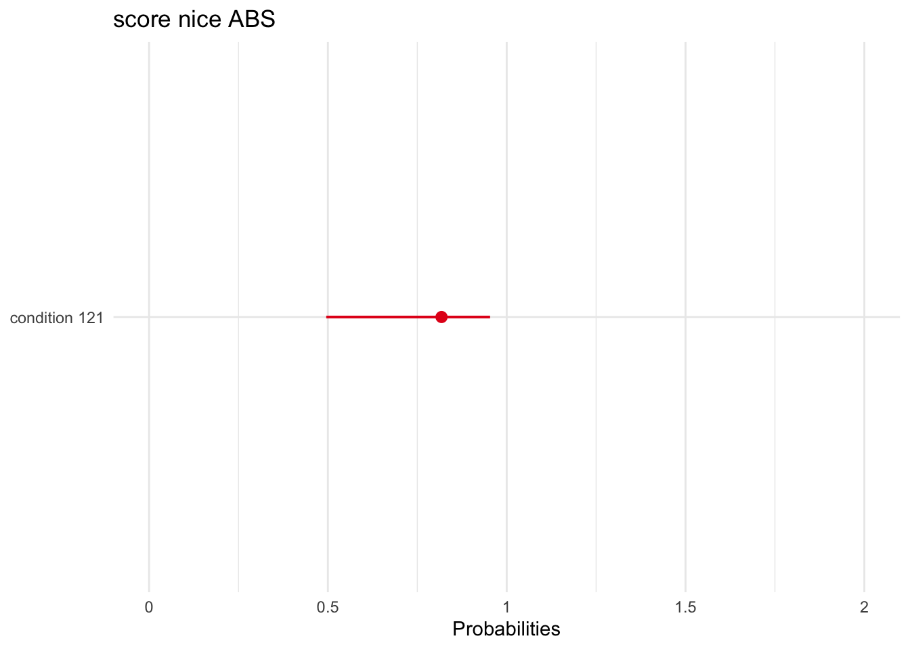
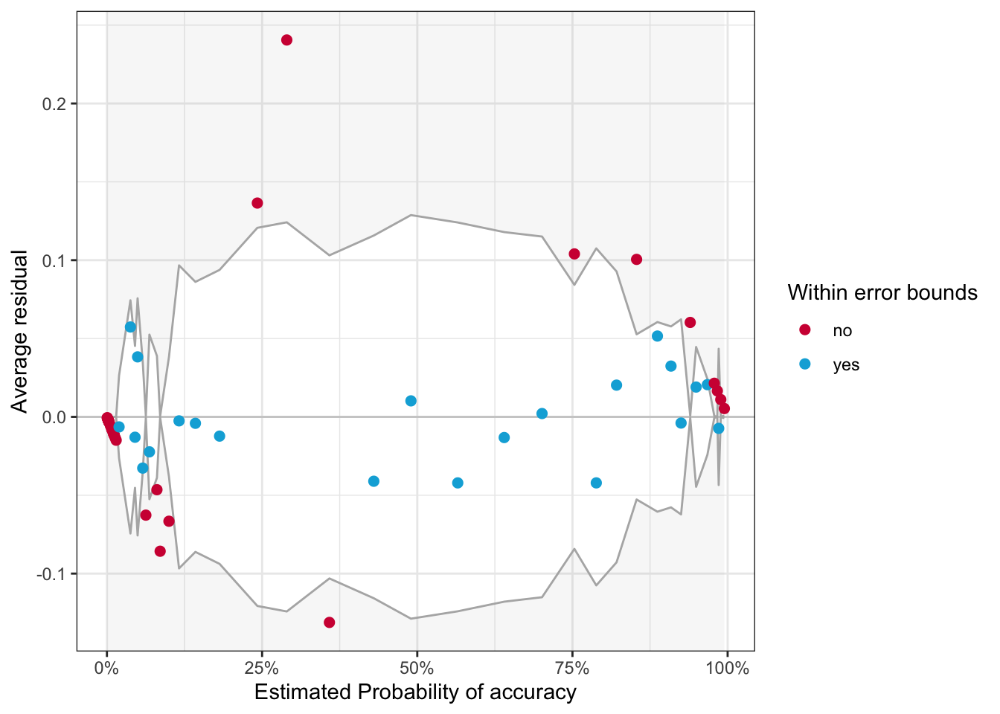

In SGC3A we set out to answer the following question: Does posing a mental impasse improve performance on the graph comprehension task?
Experimental Hypothesis Learners posed with scenario designed to evoke a mental impasse will be more likely to correct interpret the graph.
H1A | Learners in the IMPASSE condition will be more likely to correctly answer the first question than learners in CONTROL.
H1B | Learners in the IMPASSE condition will score higher on the TEST Phase than learners in CONTROL.
Null Hypothesis No significant differences in performance will exist between learners in the IMPASSE and CONTROL conditions.
CODE
# HACK WD FOR LOCAL RUNNING?# imac = "/Users/amyraefox/Code/SGC-Scaffolding_Graph_Comprehension/SGC-X/ANALYSIS/MAIN"mbp="/Users/amyfox/Sites/RESEARCH/SGC—Scaffolding Graph Comprehension/SGC-X/ANALYSIS/MAIN"setwd(mbp)#IMPORT DATA df_items<-read_rds('analysis/SGC3A/data/2-scored-data/sgc3a_scored_items.rds')df_subjects<-read_rds('analysis/SGC3A/data/2-scored-data/sgc3a_scored_participants.rds')#PREP DATA df_lab<-df_subjects%>%filter(pretty_mode=="laboratory")df_online<-df_subjects%>%filter(pretty_mode=="online-replication")
H1A | Q1 ACCURACY
Do Ss in the IMPASSE condition have a higher likelihood of producing a correct response to the first question?
The graph comprehension tasks includes 15 questions completed in sequence. But the first question the reader encounters (Q1) is the most important, as it is their first exposure to the unconventional triangular coordinate system.
Research Question
Does the frequency of correct (vs) incorrect responses on the first question differ by condition? [Is response accuracy independent of condition?]
Hypothesis
H1A | Ss in the IMPASSE condition will have a higher likelihood of correctly responding to the first question than those in the CONTROL condition
Data
data: df_items where q == 1
outcome:
accuracy ( factor(incorrect/correct) from score_niceABS [absolute score]
interpretation (ordered factor from interpretation)
predictor: condition [between-subjects factor]
Analysis Strategy
Logistic Regression on accuracy predicted by condition
account for difference in odds of correct score by condition
Ordinal Regression on interpretation predicted by condition
account for difference in (ordered correctness of interpretation) by condition
Alternative:
Chi-Square test of independence on outcome score_niceABS by condition
Notes
CHIQ SQR is simplest method to examine independence of two categorical factors; LOGISTIC REGRESSION is recommended for binomial ~ continuous; though with regression we can quantify the size of the effect and overall model fit
independence assumption : (CHI SQR) as we only consider responses on the first question, each observation corresponds to an individual subject, and are thus independent
cell frequency : (CHI SQR) expected frequency in each cell of the contingency table is greater than 5 (more than 5 correct , more than 5 incorrect responses)
CODE
#FILTER THE DATASET [use subjects, bc it has covariates on that record]# df_q1 = df_items %>% filter(q==1) %>% mutate(# accuracy = recode_factor(score_niceABS, "0" = "incorrect", "1"="correct")# )df_q1<-df_subjects%>%mutate(
accuracy =recode_factor(item_q1_NABS, "0"="incorrect","1"="correct"),
rt =item_q1_rt)%>%dplyr::select(accuracy, rt, pretty_condition, pretty_mode)#GROUPED PROPORTIONAL BAR CHART# gf_props(~accuracy, fill = ~pretty_condition, # position = position_dodge(), data = df_q1) %>% # gf_facet_grid(~pretty_mode) +# labs(x = "Correct Response on Q 1",# title = "Accuracy on First Question by Condition",# subtitle="Impasse Condition yields a greater proportion of correct responses") #theme(legend.position = "none")#STACKED BAR CHARTdf_q1%>%ggplot(data =.,
mapping =aes(x =pretty_condition,
fill =accuracy))+geom_bar(position ="fill")+#,color = "black") +scale_fill_brewer(palette ="Set1")+facet_wrap(~pretty_mode)+labs(#y = "Correct Response on Q 1",
title ="Accuracy on First Question by Condition",
x ="Condition",
fill ="",
subtitle="Impasse Condition yields a greater proportion of correct responses")
A proportional bar chart visualizing the proportion of incorrect (vs) correct responses in each condition for each data collection modality (left/right facet) reveals that the pattern of responses appear the same regardless of the data collection modality. In both data collection sessions, the proportion of incorrect responses is much greater than the proportion of correct responses, regardless of condition (marginal probability of incorrect). In the impasse condition, the difference in proportions is smaller than the control condition (conditional probability of success in impasse; (i.e) There are more correct responses in the impasse condition than the control condition).
LOGISTIC REGRESSION
Fit a logistic regression (at the subject level), predicting Q1 accuracy (absolute score) by condition.
Fit Model
First, we fit a logistic regression with condition as predictor, and compare its fit to an empty (intercept-only) model.
CODE
#combineddf<-df_q1# FREQUENCY TABLE# my.table <- table(df$accuracy, df$pretty_condition)# addmargins(my.table) #counts# addmargins(prop.table(my.table)) #props# MODEL FITTING:::::::::::::::::::::::::::::::::::::#: 1 EMPTY MODEL baseline glm model intercept onlym0=glm(accuracy~1, data =df, family ="binomial")print("EMPTY MODEL")
Call:
glm(formula = accuracy ~ 1, family = "binomial", data = df)
Deviance Residuals:
Min 1Q Median 3Q Max
-0.696 -0.696 -0.696 -0.696 1.753
Coefficients:
Estimate Std. Error z value Pr(>|z|)
(Intercept) -1.294 0.134 -9.66 <2e-16 ***
---
Signif. codes: 0 '***' 0.001 '**' 0.01 '*' 0.05 '.' 0.1 ' ' 1
(Dispersion parameter for binomial family taken to be 1)
Null deviance: 343.66 on 329 degrees of freedom
Residual deviance: 343.66 on 329 degrees of freedom
AIC: 345.7
Number of Fisher Scoring iterations: 4
CODE
#: 2 CONDITION modelm1<-glm(accuracy~pretty_condition, data =df, family ="binomial")print("PREDICTOR MODEL")
Warning: 'data_findcols()' is deprecated and will be removed in a future update.
Its usage is discouraged. Please use 'data_find()' instead.
Warning: 'data_findcols()' is deprecated and will be removed in a future update.
Its usage is discouraged. Please use 'data_find()' instead.
Warning: 'data_findcols()' is deprecated and will be removed in a future update.
Its usage is discouraged. Please use 'data_find()' instead.
Warning: 'data_findcols()' is deprecated and will be removed in a future update.
Its usage is discouraged. Please use 'data_find()' instead.
Warning: 'data_findcols()' is deprecated and will be removed in a future update.
Its usage is discouraged. Please use 'data_find()' instead.
We fitted a logistic model (estimated using ML) to predict accuracy with pretty_condition (formula: accuracy ~ pretty_condition). The model's explanatory power is weak (Tjur's R2 = 0.03). The model's intercept, corresponding to pretty_condition = control, is at -1.82 (95% CI [-2.30, -1.39], p < .001). Within this model:
- The effect of pretty condition [impasse] is statistically significant and positive (beta = 0.90, 95% CI [0.35, 1.48], p = 0.002; Std. beta = 0.90, 95% CI [0.35, 1.48])
Standardized parameters were obtained by fitting the model on a standardized version of the dataset. 95% Confidence Intervals (CIs) and p-values were computed using
# Retrieve predictions as probabilities # (for each level of the predictor)p.control<-predict(m1,data.frame(pretty_condition="control"),type="response")paste("Probability of success in control,", p.control)
[1] "Probability of success in control, 0.139240506329147"
CODE
p.impasse<-predict(m1,data.frame(pretty_condition="impasse"),type="response")paste("Probability of success in impasse,", p.impasse)
[1] "Probability of success in impasse, 0.28488372093063"
#SJPLOT | MODEL | PROBABILITIES# plot_model(m1, type="pred",# show.intercept = TRUE, # show.values = TRUE,# title = "Model Predicted Probability of Accuracy",# axis.title = c("Condition","Probability of Accurate Response"))#GGEFFECTS | MODEL | PROBABILITIES# library(ggeffects)ggeffect(model =m1)%>%plot()
Ok: About 100% of the residuals are inside the error bounds.

Inference
We fit a logistic regression model to analyze the effect of experimental condition on probability of a correct answer on the first question. In this model, the effect of condition is statistically significant (z = 3.16, p = 0.0016). The model predicts that the odds of a correct response on the first question in the impasse condition increase by 146% (\(e^{beta_1}\) = 2.46, 95% CI [1.42, 4.37]) over the control condition.
Equivalent statements:
being in impasse condition increases log odds of correct response by 0.901 (over control)
being in impasse increases odds of correct response in impasse over control increases by factor of 2.46
probability of correct response in control predicted as 28.5%, vs only 14% in control condition
# #CREATE DATAFRAME OF Q1# df <- df_items %>% filter(q ==1) %>% mutate(scaled = as.factor(score_SCALED))# # #MODEL# m <- polr(scaled ~ condition , data = df, Hess=TRUE)# summary(m)# confint(m)# performance(m)# report(m)# # #exponentiate coefficients and CIs # ci <- confint(m)# ci# e <- coef(m)# e# # exp(cbind(e,ci))# # # Retrieve predictions as probabilities # # (for each level of the predictor)# # p.control <- predict(m,data.frame(condition="111"),type="response")# # paste("Probability of success in control,", p.control)# # p.impasse <- predict(m,data.frame(condition="121"),type="response")# # paste("Probability of success in impasse,", p.impasse)# # # Plot Predicted data and original data points# # ggplot(df, aes(x=condition, y=accuracy)) + # # geom_point() +# # stat_smooth(method="glm", color="green", se=FALSE,# # method.args = list(family=binomial))# # #TO PLOT ALL EFFECTS# library(effects)# plot(allEffects(m))# # #SJPLOT# library(sjPlot)# plot_model(m, )# # # #CONVERT TO PROBABILITIES# newdat <- data.frame(condition=c("111","121"))# prob <- (phat <- predict(object = m, newdat, type="p"))# prob#
H1B | OVERALL ACCURACY
Do Ss in the IMPASSE condition have higher scores across the entire task?
The graph comprehension tasks includes 13 interpretation-discriminant questions completed in sequence.
Research Question
Do Ss in the IMPASSE condition score higher across the entire task than those in the CONTROL group.
Hypothesis
(H1B) Participants in the IMPASSE condition will have higher test phase performance than those in the CONTROL condition.
Data
data: df_items where q nin 6,9 (the 13 discriminating Qs ), df_subjects
outcome:
[at item level]
accuracy ( factor(incorrect/correct) from score_niceABS [absolute score]
interpretation (ordered factor from interpretation)
[subject level]
p_accuracy (percent of correct responses)
predictor: condition [between-subjects factor]
Analysis Strategy
Mixed Logistic Regression accuracy ~ condition + (1 | subject )
model effect of condition on probability of correct response [during test phase] while accounting for subject (and item-level?) effects
Ordinal Mixed Logistic Regression interpretation ~ condition + (1 | subject )
model effect of condition on [ordered correctness of interpretation] [during test phase] while accounting for subject (and item-level?) effects
Shift in Modal Mass (descriptive)
describe & visualize shift in deciles between conditions for `scaled_score` (at subject level)
Alternatives
OLS LINEAR REGRESSION
bimodal distribution at tails makes the mean a poor predictor; LMs violate assumptions of normally distributed residuals
both absolute and scaled scores yield non-normal residuals
no transformation of the outcome variables yield normal residuals
Notes
Also exploring:
Hurdle model (mixture model w/ binomial + [poisson or negbinom count; 0s from 1 DGP)
Zero Inflated model (mixture model w/ binomial + poisson or negbinom count; 0s from 2 DGPs)
Beta regression hurdle model? (mixture with location and scale parameters [mean, variance] and hurdles for floor and ceiling effects)
Other way to account for the severe bimodality?
CODE
#PREPARE DATA n_items=13#number of items in test#item leveldf=df_items%>%filter(q%nin%c(6,9))%>%mutate(
accuracy =recode_factor(score_niceABS, "0"="incorrect","1"="correct"),
q =as.factor(q))#STACKED PROPORTIONAL BAR CHARTdf%>%ggplot(data =.,
mapping =aes(x =pretty_condition,
fill =accuracy))+geom_bar(position ="fill")+#,color = "black") +scale_fill_brewer(palette ="Set1")+facet_wrap(~pretty_mode)+labs(#y = "Correct Response on Q 1",
title ="Accuracy on Task",
x ="Condition",
fill ="",
subtitle="Impasse Condition yields a greater proportion of correct responses")
CODE
#GROUPED PROPORTIONAL BAR CHART# gf_props(~accuracy, fill = ~pretty_condition, x =~pretty_condition,# position = position_dodge(), data = df) %>% # gf_facet_grid(~pretty_mode) +# labs(x = "Correct Responses in Test Phase",# title = "Accuracy on Task by Condition",# subtitle="Impasse Condition yields a greater proportion of correct responses")#FACETED HISTOGRAMstats=df_subjects%>%group_by(pretty_condition)%>%dplyr::summarise(mean =mean(s_NABS))gf_props(~s_NABS,
fill =~pretty_condition, data =df_subjects)%>%gf_facet_grid(pretty_condition~pretty_mode)%>%gf_vline(data =stats, xintercept =~mean, color ="red")+labs(x ="# Correct",
y ="proportion of subjects",
title ="Overall Absolute Score (# Correct)",
subtitle ="")+theme(legend.position ="blank")
MIXED LOGISTIC REGRESSION
Fit a mixed logistic regression (at the item level), predicting accuracy (absolute score) on all discriminating questions by condition; accounting for random effects of subject and item.
Fit Model
CODE
## 1 | SETUP RANDOM INTERCEPT SUBJECT#:: EMPTY MODEL (baseline, no random effect)print("Empty fixed model")
[1] "Empty fixed model"
CODE
m0=glm(accuracy~1, family ="binomial", data =df)m0
Call: glm(formula = accuracy ~ 1, family = "binomial", data = df)
Coefficients:
(Intercept)
-0.903
Degrees of Freedom: 4289 Total (i.e. Null); 4289 Residual
Null Deviance: 5150
Residual Deviance: 5150 AIC: 5160
CODE
#:: RANDOM INTERCEPT SUBJECTprint("Subject intercept random model")
[1] "Subject intercept random model"
CODE
mm.rS<-glmer(accuracy~(1|subject), data =df,family ="binomial")mm.rS
Generalized linear mixed model fit by maximum likelihood (Laplace
Approximation) [glmerMod]
Family: binomial ( logit )
Formula: accuracy ~ (1 | subject)
Data: df
AIC BIC logLik deviance df.resid
2588 2601 -1292 2584 4288
Random effects:
Groups Name Std.Dev.
subject (Intercept) 4.25
Number of obs: 4290, groups: subject, 330
Fixed Effects:
(Intercept)
-2.96
CODE
# :: TEST random effectpaste("AIC decreases w/ new model?", m0$aic>AIC(logLik(mm.rS)))
[1] "AIC decreases w/ new model? TRUE"
CODE
test_lrt(m0,mm.rS)#same as anova(m0, m1, test = "Chi")
# Likelihood-Ratio-Test (LRT) for Model Comparison
Name | Model | df | df_diff | Chi2 | p
--------------------------------------------------
m0 | glm | 1 | | |
mm.rS | glmerMod | 2 | 1 | 2569.38 | < .001
CODE
paste("Likelihood Ratio test is significant? p = ",(test_lrt(m0,mm.rS))$p[2])
[1] "Likelihood Ratio test is significant? p = 0"
CODE
## 2 | ADD RANDOM RANDOM INTERCEPT ITEM#:: RANDOM INTERCEPT SUBJECT + INTERCEPT Qprint("Subject & Question random intercepts")
[1] "Subject & Question random intercepts"
CODE
mm.rSQ<-glmer(accuracy~(1|subject)+(1|q), data =df,family ="binomial")mm.rSQ
Generalized linear mixed model fit by maximum likelihood (Laplace
Approximation) [glmerMod]
Family: binomial ( logit )
Formula: accuracy ~ (1 | subject) + (1 | q)
Data: df
AIC BIC logLik deviance df.resid
2476 2495 -1235 2470 4287
Random effects:
Groups Name Std.Dev.
subject (Intercept) 4.622
q (Intercept) 0.685
Number of obs: 4290, groups: subject, 330; q, 13
Fixed Effects:
(Intercept)
-3.2
CODE
# :: TEST random effectpaste("AIC decreases w/ new model?", AIC(logLik(mm.rS))>AIC(logLik(mm.rSQ)))
[1] "AIC decreases w/ new model? TRUE"
CODE
test_lrt(mm.rS,mm.rSQ)#same as anova(m0, m1, test = "Chi")
Some of the nested models seem to be identical and probably only vary in
their random effects.
# Likelihood-Ratio-Test (LRT) for Model Comparison
Name | Model | df | df_diff | Chi2 | p
--------------------------------------------------
mm.rS | glmerMod | 2 | | |
mm.rSQ | glmerMod | 3 | 1 | 114.70 | < .001
CODE
paste("Likelihood Ratio test is significant? p = ",(test_lrt(mm.rS,mm.rSQ))$p[2])
Some of the nested models seem to be identical and probably only vary in
their random effects.
[1] "Likelihood Ratio test is significant? p = 9.1748198033228e-27"
Warning: 'data_findcols()' is deprecated and will be removed in a future update.
Its usage is discouraged. Please use 'data_find()' instead.
Warning: 'data_findcols()' is deprecated and will be removed in a future update.
Its usage is discouraged. Please use 'data_find()' instead.
Warning: 'data_findcols()' is deprecated and will be removed in a future update.
Its usage is discouraged. Please use 'data_find()' instead.
Warning: 'data_findcols()' is deprecated and will be removed in a future update.
Its usage is discouraged. Please use 'data_find()' instead.
Warning: 'data_findcols()' is deprecated and will be removed in a future update.
Its usage is discouraged. Please use 'data_find()' instead.
We fitted a logistic mixed model (estimated using ML and Nelder-Mead optimizer) to predict accuracy with pretty_condition (formula: accuracy ~ pretty_condition). The model included subject and q as random effects (formula: list(~1 | subject, ~1 | q)). The model's total explanatory power is substantial (conditional R2 = 0.89) and the part related to the fixed effects alone (marginal R2) is of 0.13. The model's intercept, corresponding to pretty_condition = control, is at -5.68 (95% CI [-7.06, -4.30], p < .001). Within this model:
- The effect of pretty condition [impasse] is statistically significant and positive (beta = 4.00, 95% CI [2.58, 5.43], p < .001; Std. beta = 4.00, 95% CI [2.58, 5.43])
Standardized parameters were obtained by fitting the model on a standardized version of the dataset. 95% Confidence Intervals (CIs) and p-values were computed using the Wald approximation.
#SJPLOT | MODEL | PROBABILITIESplot_model(mm.CrSQ, type="pred",
show.intercept =TRUE,
show.values =TRUE,
title ="Model Predicted Probability of Accuracy",
axis.title =c("Condition","Probability of Accurate Response"))
Warning: Probably bad model fit. Only about 37% of the residuals are inside the error bounds.

Inference
We fit a mixed-effect binomial logistic regression model with random intercepts for subjects and items; to investigate the effect of condition on test phase item accuracy. The model including a fixed effect of condition performed significantly better than an intercept-only baseline model (χ2(4): 38.72, p < 0.001); and the total explanatory power is substantial (conditional R2 = 0.89) and the part related to the fixed effects alone (marginal R2) is 0.13. Consistent with the pattern of results for the first question only, across all test-phase items, being in the impasse condition increases the odds of a correct response by a factor of 55 over the control condition \(e^{\beta_1}\) = 54.79, 95% CI [13.2, 227.39], p < 0.001.
sanity check random effects structure : ITEM appropriate as random intercept? What does it mean to have two random intercepts?
DIAGNOSTICS: What in the world is happening with the normality of random effects plot? Do the fixed effects residuals need to be normally distributed?
Are there other plots or recommended diagnostics for mixed log regression
consider multiple regression with rt, sequence cluster, confidence, etc.
CODE
#STEPWISE FIT ALT #:: EMPTY MODEL (baseline, no random effect)# m0 = glm(accuracy ~ 1, family = "binomial", data = df) #:: EMPTY MODEL (baseline, no random effect)# m0 = glm(accuracy ~ 1, family = "binomial", data = df) # # #:: RANDOM INTERCEPT SUBJECT# mm.rS <- glmer(accuracy ~ (1|subject), data = df,family = "binomial")# # # :: TEST random effect# paste("AIC with random effect is lower than glm empty model?", m0$aic > AIC(logLik(mm.rS)))# test_lrt(m0,mm.rS) #same as anova(m0, m1, test = "Chi")# paste("Likelihood Ratio test is significant? p = ",(test_lrt(m0,mm.rS))$p[2])
TODO | Ordinal Regression on ITEM-Interpretation
SHIFT IN MODAL MASS
The Effect of Condition on Total Scaled Score can be described as a ‘shift’ in mass between the low and high modes of each distribution.
First, we use the Kolmogorov-Smirnov test as a Robust alternative to the t-test to test if the two distributions likely come from different populations.
CODE
# HACK WD FOR LOCAL RUNNING?# imac = "/Users/amyraefox/Code/SGC-Scaffolding_Graph_Comprehension/SGC-X/ANALYSIS/MAIN"mbp="/Users/amyfox/Sites/RESEARCH/SGC—Scaffolding Graph Comprehension/SGC-X/ANALYSIS/MAIN"setwd(mbp)#(requires shift function files loaded)#LOAD MODAL SHIFT FUNCTION RESOURCESsource("analysis/utils/shift_function/Rallfun-v30.txt")source("analysis/utils/shift_function/wilcox_modified.txt")source("analysis/utils/shift_function/rgar_visualisation.txt")source("analysis/utils/shift_function/rgar_utils.txt")#NOTE: something in these breaks the stat_ecdf in ggplot2#PREP DATA df<-df_subjects%>%dplyr::select(s_SCALED, pretty_condition)%>%mutate(
data =as.numeric(s_SCALED),
#flip order levels to correctly orient graph# gr = recode_factor(pretty_condition, "impasse" = "impasse", "control"="control")
gr =as.character(pretty_condition))%>%dplyr::select(data,gr)g1<-df%>%filter(gr=="control")%>%dplyr::pull(data)g2<-df%>%filter(gr=="impasse")%>%dplyr::pull(data)#COMPARE DISTRIBUTIONS WITH ROBUST TESTS#What do common tests say about the difference?# Kolmogorov-Smirnov test#If y is numeric, a two-sample (Smirnov) test of the null hypothesis that x and y #were drawn from the same continuous distribution is performed. Alternatively, y ...#null is X is drawn from CDF EQUAL TO Yks.test(g1,g2)
Warning in ks.test(g1, g2): p-value will be approximate in the presence of ties
Two-sample Kolmogorov-Smirnov test
data: g1 and g2
D = 0.5, p-value <2e-16
alternative hypothesis: two-sided
CODE
print("SUGGESTS that impasse and control come from different population distributions")
[1] "SUGGESTS that impasse and control come from different population distributions"
CODE
# #null is X is NOT LESS THAN Yks.test(g1,g2, alternative ="greater")
Warning in ks.test(g1, g2, alternative = "greater"): p-value will be approximate
in the presence of ties
Two-sample Kolmogorov-Smirnov test
data: g1 and g2
D^+ = 0.5, p-value <2e-16
alternative hypothesis: the CDF of x lies above that of y
CODE
print("SUGGESTS that true CDF of CONTROL is greater than that of IMPASSE [consistent with higher probability of low scores]")
[1] "SUGGESTS that true CDF of CONTROL is greater than that of IMPASSE [consistent with higher probability of low scores]"
Welch Two Sample t-test
data: g1 and g2
t = -7, df = 325, p-value = 7e-12
alternative hypothesis: true difference in means is not equal to 0
95 percent confidence interval:
-8.93 -5.06
sample estimates:
mean of x mean of y
-6.427 0.567
CODE
#IF THIS ERRORS, consider loadling plyr (older than dplyr)# kernel density estimate + rug plot + superimposed decileskde<-plot.kde_rug_dec2(df)
You have loaded plyr after dplyr - this is likely to cause problems.
If you need functions from both plyr and dplyr, please load plyr first, then dplyr:
library(plyr); library(dplyr)
The following objects are masked from 'package:dplyr':
arrange, count, desc, failwith, id, mutate, rename, summarise,
summarize
The following object is masked from 'package:purrr':
compact
The following object is masked from 'package:vcdExtra':
summarise
The following object is masked from 'package:ggpubr':
mutate
The following objects are masked from 'package:Hmisc':
is.discrete, summarize
CODE
# kde# compute shift functionout<-shifthd(g1, g2, nboot=200)# plot shift functionsf<-plot.sf(data=out)# function from rgar_visualisation.txt# sf# combine KDE + SFcowplot::plot_grid(kde, sf, labels=c("A", "B"), ncol =1, nrow =2, rel_heights =c(1.5, 1),label_size =18,hjust =-1,scale=.95)
RESOURCES
reset plot margins par(mar=c(1,1,1,1))
Logistic Regression Notes
The logistic regression intercept gives the log odds of the outcome for the reference level of the predictor variable
The logistic regression coefficients give the change in the log odds of the outcome for a one unit increase in the predictor variable.
Source Code
---subtitle: 'Study SGC3A | 4 Hypothesis Testing'---\newpage# Hypothesis Testing {#sec-SGC3A-hypotesting}**TODO**- ORDINAL models on interpretation scale - HURDLE MODEL? (mixture model w/ 0 + count)- review models already created in ARCHIVE?- separate combined (vs) lab (vs) online replication \[once analysis strategy locked down\]*The purpose of this notebook is test the hypotheses that determined the design of the SGC3A study.*+---------------------+| Pre-Requisite |+=====================+| 2_sgc3A_scoring.qmd |+---------------------+```{r}#| label: SETUP#| warning : false#| message : falselibrary(Hmisc) # %nin% operatorlibrary(ggpubr) #arrange plotslibrary(cowplot) #arrange shift function plotslibrary(ggformula) #easy graphslibrary(vcd) #mosaic plotslibrary(vcdExtra) #mosaic plotslibrary(kableExtra) #printing tables library(sjPlot) #visualize model coefficients#plot model estimates with uncertaintylibrary(ggdist)library(broom)library(modelr)library(distributional)#models and performancelibrary(lmerTest) #for CIs in glmer library(ggstatsplot) #plots w/ embedded statslibrary(report) #easystats reportinglibrary(see) #easystats visualizationlibrary(performance) #easystats model diagnosticslibrary(qqplotr) #confint on qq plotlibrary(gmodels) #contingency table and CHISQRlibrary(equatiomatic) #extract model equationlibrary(pscl) #zeroinfl / hurdle models library(lme4) #mixed effects models library(ggeffects) #visualization log regr modelslibrary(tidyverse) #ALL THE THINGS#OUTPUT OPTIONSlibrary(dplyr, warn.conflicts =FALSE)options(dplyr.summarise.inform =FALSE)options(ggplot2.summarise.inform =FALSE)options(scipen=1, digits=3)#GRAPH THEMEINGtheme_set(theme_minimal()) ```**Research Questions**In SGC3A we set out to answer the following question: Does posing a mental impasse improve performance on the graph comprehension task?**Experimental Hypothesis**\*Learners posed with scenario designed to evoke a mental impasse will be more likely to correct interpret the graph.*- H1A \| Learners in the IMPASSE condition will be more likely to correctly answer the first question than learners in CONTROL.- H1B \| Learners in the IMPASSE condition will score higher on the TEST Phase than learners in CONTROL.**Null Hypothesis**\*No significant differences in performance will exist between learners in the IMPASSE and CONTROL conditions.*```{r}#| label: IMPORT-DATA#| warning : false#| message : false# HACK WD FOR LOCAL RUNNING?# imac = "/Users/amyraefox/Code/SGC-Scaffolding_Graph_Comprehension/SGC-X/ANALYSIS/MAIN"mbp ="/Users/amyfox/Sites/RESEARCH/SGC—Scaffolding Graph Comprehension/SGC-X/ANALYSIS/MAIN"setwd(mbp)#IMPORT DATA df_items <-read_rds('analysis/SGC3A/data/2-scored-data/sgc3a_scored_items.rds')df_subjects <-read_rds('analysis/SGC3A/data/2-scored-data/sgc3a_scored_participants.rds')#PREP DATA df_lab <- df_subjects %>%filter(pretty_mode =="laboratory")df_online <- df_subjects %>%filter(pretty_mode =="online-replication")```## H1A \| Q1 ACCURACY**Do Ss in the IMPASSE condition have a higher likelihood of producing a correct response to the first question?**The graph comprehension tasks includes 15 questions completed in sequence. But the first question the reader encounters (Q1) is the most important, as it is their *first exposure* to the unconventional triangular coordinate system.+-----------------------+----------------------------------------------------------------------------------------------------------------------------------------------------------------------------------------------------------------------------------------+| Research Question | Does the frequency of correct (vs) incorrect responses on the first question differ by condition? \[Is response accuracy independent of condition?\] |+=======================+========================================================================================================================================================================================================================================+| **Hypothesis** | H1A \| Ss in the IMPASSE condition will have a higher likelihood of correctly responding to the first question than those in the CONTROL condition |+-----------------------+----------------------------------------------------------------------------------------------------------------------------------------------------------------------------------------------------------------------------------------+| **Data** | data: `df_items` where `q == 1` || | || | outcome: || | || | - *accuracy* ( factor(incorrect/correct) from `score_niceABS`\[absolute score\] || | || | - *interpretation* (ordered factor from `interpretation`) || | || | predictor: `condition`\[between-subjects factor\] |+-----------------------+----------------------------------------------------------------------------------------------------------------------------------------------------------------------------------------------------------------------------------------+| **Analysis Strategy** | 1. Logistic Regression on `accuracy` predicted by `condition` || | - account for difference in odds of correct score by condition || | 2. Ordinal Regression on `interpretation` predicted by `condition` || | - account for difference in (ordered correctness of interpretation) by condition || | || | Alternative: || | || | - Chi-Square test of independence on outcome `score_niceABS` by `condition` |+-----------------------+----------------------------------------------------------------------------------------------------------------------------------------------------------------------------------------------------------------------------------------+| **Notes** | - CHIQ SQR is simplest method to examine independence of two categorical factors; LOGISTIC REGRESSION is recommended for binomial \~ continuous; though with regression we can quantify the size of the effect and overall model fit || | - independence assumption : (CHI SQR) as we only consider responses on the first question, each observation corresponds to an individual subject, and are thus independent || | - cell frequency : (CHI SQR) expected frequency in each cell of the contingency table is greater than 5 (more than 5 correct , more than 5 incorrect responses) |+-----------------------+----------------------------------------------------------------------------------------------------------------------------------------------------------------------------------------------------------------------------------------+```{r}#| label: SETUP-Q1ACC#FILTER THE DATASET [use subjects, bc it has covariates on that record]# df_q1 = df_items %>% filter(q==1) %>% mutate(# accuracy = recode_factor(score_niceABS, "0" = "incorrect", "1"="correct")# )df_q1 <- df_subjects %>%mutate(accuracy =recode_factor(item_q1_NABS, "0"="incorrect","1"="correct"),rt = item_q1_rt) %>% dplyr::select( accuracy, rt, pretty_condition, pretty_mode)#GROUPED PROPORTIONAL BAR CHART# gf_props(~accuracy, fill = ~pretty_condition, # position = position_dodge(), data = df_q1) %>% # gf_facet_grid(~pretty_mode) +# labs(x = "Correct Response on Q 1",# title = "Accuracy on First Question by Condition",# subtitle="Impasse Condition yields a greater proportion of correct responses") #theme(legend.position = "none")#STACKED BAR CHARTdf_q1 %>%ggplot(data = .,mapping =aes(x = pretty_condition,fill = accuracy)) +geom_bar(position ="fill" ) +#,color = "black") +scale_fill_brewer(palette ="Set1") +facet_wrap(~pretty_mode) +labs(#y = "Correct Response on Q 1",title ="Accuracy on First Question by Condition",x ="Condition",fill ="",subtitle="Impasse Condition yields a greater proportion of correct responses")```A proportional bar chart visualizing the proportion of incorrect (vs) correct responses in each condition for each data collection modality (left/right facet) reveals that the pattern of responses appear the same regardless of the data collection modality. In both data collection sessions, the proportion of incorrect responses is much greater than the proportion of correct responses, regardless of condition (marginal probability of incorrect). In the impasse condition, the difference in proportions is smaller than the control condition (conditional probability of success in impasse; (i.e) There are more correct responses in the impasse condition than the control condition).### LOGISTIC REGRESSION*Fit a logistic regression (at the subject level), predicting Q1 accuracy (absolute score) by condition.*#### Fit Model*First, we fit a logistic regression with condition as predictor, and compare its fit to an empty (intercept-only) model.*```{r}#| label: FIT-Q1ACC-LOG-combined#| warning: false#| message: false#combineddf <- df_q1 # FREQUENCY TABLE# my.table <- table(df$accuracy, df$pretty_condition)# addmargins(my.table) #counts# addmargins(prop.table(my.table)) #props# MODEL FITTING:::::::::::::::::::::::::::::::::::::#: 1 EMPTY MODEL baseline glm model intercept onlym0 =glm(accuracy ~1, data = df, family ="binomial")print("EMPTY MODEL")summary(m0)#: 2 CONDITION modelm1 <-glm( accuracy ~ pretty_condition, data = df, family ="binomial")print("PREDICTOR MODEL")summary(m1)#: 3 TEST SUPERIOR FITpaste("AIC wth predictor is lower than empty model?", m0$aic > m1$aic)test_lrt(m0,m1) #same as anova(m0, m1, test = "Chi")paste("Likelihood Ratio test is significant? p = ",(test_lrt(m0,m1))$p[2])```*The Condition predictor significantly improves model fit.*#### Visualize```{r}#| label: MODEL-Q1ACC-LOG-combined# DESCRIBE MODEL ::::::::::::::::::::::::::::::::::::: print("PREDICTOR MODEL")# summary(m1)#: INTERPRET COEFFICIENTSprint("Coefficients —- LOG ODDS")confint(m1)print("Coefficients —- ODDS RATIOS")e <-cbind( exp(coef(m1)), exp(confint(m1))) #exponentiateeprint("MODEL PERFORMANCE")performance(m1)print("SANITY CHECK REPORTING")report(m1)print("MODEL PREDICTIONS")# Retrieve predictions as probabilities # (for each level of the predictor)p.control <-predict(m1,data.frame(pretty_condition="control"),type="response")paste("Probability of success in control,", p.control)p.impasse <-predict(m1,data.frame(pretty_condition="impasse"),type="response")paste("Probability of success in impasse,", p.impasse)#: PLOT#GGSTATS | MODEL | LOG ODDS # library(ggstatsplot)# ggcoefstats(m1, output = "plot") + labs(x = "Log Odds Estimate")#SJPLOT | MODEL | ODDS RATIO#library(sjPlot)plot_model(m1, type="std2", vline.color ="red", show.intercept =TRUE, show.values =TRUE) +labs(title ="Model Predicted Odds Ratio",subtitle ="",x ="Condition")#SJPLOT | MODEL | PROBABILITIES# plot_model(m1, type="pred",# show.intercept = TRUE, # show.values = TRUE,# title = "Model Predicted Probability of Accuracy",# axis.title = c("Condition","Probability of Accurate Response"))#GGEFFECTS | MODEL | PROBABILITIES# library(ggeffects)ggeffect(model = m1) %>%plot()#SANITY CHECK SJPLOT# library(effects)# plot(allEffects(m))```#### Diagnostics```{r}check_model(m1)binned_residuals(m1)```#### InferenceWe fit a logistic regression model to analyze the effect of experimental condition on probability of a correct answer on the first question. In this model, the effect of condition is statistically significant (z = 3.16, p = 0.0016). The model predicts that the odds of a correct response on the first question in the *impasse condition* increase by 146% ($e^{beta_1}$ = 2.46, 95% CI \[1.42, 4.37\]) over the *control condition*.*Equivalent statements:*- being in impasse condition increases log odds of correct response by 0.901 (over control)- being in impasse increases odds of correct response in impasse over control increases by factor of 2.46- probability of correct response in control predicted as 28.5%, vs only 14% in control condition```{r}#PRETTY TABLE SJPLOTtab_model(m1)```#### TODO- Are these residuals OK? I didn't think normally distributed residuals were an assumption for logistic regression.- Interpretation/reporting of model fit?- sanity check correct interpretation of coefficients & reporting### TODO ORDINAL REGRESSION*Fit an ordinal logistic regression (at the subject level), predicting Q1 interpretation by condition.*- https://stats.oarc.ucla.edu/r/faq/ologit-coefficients/- https://journals.sagepub.com/doi/full/10.1177/2515245918823199- todo see ordinal regression video```{r}# #CREATE DATAFRAME OF Q1# df <- df_items %>% filter(q ==1) %>% mutate(scaled = as.factor(score_SCALED))# # #MODEL# m <- polr(scaled ~ condition , data = df, Hess=TRUE)# summary(m)# confint(m)# performance(m)# report(m)# # #exponentiate coefficients and CIs # ci <- confint(m)# ci# e <- coef(m)# e# # exp(cbind(e,ci))# # # Retrieve predictions as probabilities # # (for each level of the predictor)# # p.control <- predict(m,data.frame(condition="111"),type="response")# # paste("Probability of success in control,", p.control)# # p.impasse <- predict(m,data.frame(condition="121"),type="response")# # paste("Probability of success in impasse,", p.impasse)# # # Plot Predicted data and original data points# # ggplot(df, aes(x=condition, y=accuracy)) + # # geom_point() +# # stat_smooth(method="glm", color="green", se=FALSE,# # method.args = list(family=binomial))# # #TO PLOT ALL EFFECTS# library(effects)# plot(allEffects(m))# # #SJPLOT# library(sjPlot)# plot_model(m, )# # # #CONVERT TO PROBABILITIES# newdat <- data.frame(condition=c("111","121"))# prob <- (phat <- predict(object = m, newdat, type="p"))# prob# ```## H1B \| OVERALL ACCURACY**Do Ss in the IMPASSE condition have higher scores across the entire task?**The graph comprehension tasks includes 13 interpretation-discriminant questions completed in sequence.+-----------------------+---------------------------------------------------------------------------------------------------------------------------------------------------------+| Research Question | Do Ss in the IMPASSE condition score higher across the entire task than those in the CONTROL group. |+=======================+=========================================================================================================================================================+| **Hypothesis** | (H1B) Participants in the IMPASSE condition will have higher test phase performance than those in the CONTROL condition. |+-----------------------+---------------------------------------------------------------------------------------------------------------------------------------------------------+| **Data** | **data**: `df_items` where `q nin 6,9` (the 13 discriminating Qs ), `df_subjects` || | || | **outcome**: || | || | - \[at item level\] || | - *accuracy* ( factor(incorrect/correct) from `score_niceABS`\[absolute score\] || | - *interpretation* (ordered factor from `interpretation`) || | - \[subject level\] || | - p_accuracy (percent of correct responses) || | || | **predictor**: `condition`\[between-subjects factor\] |+-----------------------+---------------------------------------------------------------------------------------------------------------------------------------------------------+| **Analysis Strategy** | 1. Mixed Logistic Regression\ || | `accuracy` \~ `condition` + (1 \| `subject` )\ || | model effect of condition on probability of correct response \[during test phase\] while accounting for subject (and item-level?) effects || | 2. Ordinal Mixed Logistic Regression\ || | `interpretation` \~ `condition` + (1 \| `subject` )\ || | model effect of condition on \[ordered correctness of interpretation\]\[during test phase\] while accounting for subject (and item-level?) effects || | 3. Shift in Modal Mass (descriptive)\ || | describe & visualize shift in deciles between conditions for `` `scaled_score` `` (at subject level) |+-----------------------+---------------------------------------------------------------------------------------------------------------------------------------------------------+| **Alternatives** | - OLS LINEAR REGRESSION || | - bimodal distribution at tails makes the mean a poor predictor; LMs violate assumptions of normally distributed residuals || | - lm `DV_percent_test_NABS` \~ `condition` (absolute scoring) OR lm `item_test_SCALED` \~ `condition` (scaled scoring) || | - both absolute and scaled scores yield non-normal residuals || | - no transformation of the outcome variables yield normal residuals |+-----------------------+---------------------------------------------------------------------------------------------------------------------------------------------------------+| **Notes** | **Also exploring:** || | || | - Hurdle model (mixture model w/ binomial + \[poisson or negbinom count; 0s from 1 DGP) || | - Zero Inflated model (mixture model w/ binomial + poisson or negbinom count; 0s from 2 DGPs) || | - Beta regression hurdle model? (mixture with location and scale parameters \[mean, variance\] and hurdles for floor and ceiling effects) || | - Other way to account for the severe bimodality? |+-----------------------+---------------------------------------------------------------------------------------------------------------------------------------------------------+```{r}#| label: SETUP-TEST-ACC#PREPARE DATA n_items =13#number of items in test#item leveldf = df_items %>%filter(q %nin%c(6,9)) %>%mutate(accuracy =recode_factor(score_niceABS, "0"="incorrect","1"="correct"),q =as.factor(q))#STACKED PROPORTIONAL BAR CHARTdf %>%ggplot(data = .,mapping =aes(x = pretty_condition,fill = accuracy)) +geom_bar(position ="fill" ) +#,color = "black") +scale_fill_brewer(palette ="Set1") +facet_wrap(~pretty_mode) +labs(#y = "Correct Response on Q 1",title ="Accuracy on Task",x ="Condition",fill ="",subtitle="Impasse Condition yields a greater proportion of correct responses")#GROUPED PROPORTIONAL BAR CHART# gf_props(~accuracy, fill = ~pretty_condition, x =~pretty_condition,# position = position_dodge(), data = df) %>% # gf_facet_grid(~pretty_mode) +# labs(x = "Correct Responses in Test Phase",# title = "Accuracy on Task by Condition",# subtitle="Impasse Condition yields a greater proportion of correct responses")#FACETED HISTOGRAMstats = df_subjects %>%group_by(pretty_condition) %>% dplyr::summarise(mean =mean(s_NABS))gf_props(~s_NABS, fill =~pretty_condition, data = df_subjects) %>%gf_facet_grid(pretty_condition ~ pretty_mode) %>%gf_vline(data = stats, xintercept =~mean, color ="red") +labs(x ="# Correct",y ="proportion of subjects",title ="Overall Absolute Score (# Correct)",subtitle ="") +theme(legend.position ="blank")```### MIXED LOGISTIC REGRESSION*Fit a mixed logistic regression (at the item level), predicting accuracy (absolute score) on all discriminating questions by condition; accounting for random effects of subject and item.*#### Fit Model```{r}#| label: MODEL-MLOG-ABS-comb## 1 | SETUP RANDOM INTERCEPT SUBJECT#:: EMPTY MODEL (baseline, no random effect)print("Empty fixed model")m0 =glm(accuracy ~1, family ="binomial", data = df) m0#:: RANDOM INTERCEPT SUBJECTprint("Subject intercept random model")mm.rS <-glmer(accuracy ~ (1|subject), data = df,family ="binomial")mm.rS# :: TEST random effectpaste("AIC decreases w/ new model?", m0$aic >AIC(logLik(mm.rS)))test_lrt(m0,mm.rS) #same as anova(m0, m1, test = "Chi")paste("Likelihood Ratio test is significant? p = ",(test_lrt(m0,mm.rS))$p[2])## 2 | ADD RANDOM RANDOM INTERCEPT ITEM#:: RANDOM INTERCEPT SUBJECT + INTERCEPT Qprint("Subject & Question random intercepts")mm.rSQ <-glmer(accuracy ~ (1|subject) + (1|q), data = df,family ="binomial")mm.rSQ# :: TEST random effectpaste("AIC decreases w/ new model?", AIC(logLik(mm.rS)) >AIC(logLik(mm.rSQ)) )test_lrt(mm.rS,mm.rSQ) #same as anova(m0, m1, test = "Chi")paste("Likelihood Ratio test is significant? p = ",(test_lrt(mm.rS,mm.rSQ))$p[2])## 3 | ADD FIXED EFFECT# SUBJECT INTERCEPT | FIXED CONDITION print("FIXED Condition + Subject & Question random intercepts")mm.CrSQ <-glmer(accuracy ~ pretty_condition + (1|subject) + (1|q), data = df,family ="binomial")mm.CrSQpaste("AIC decreases w/ new model", AIC(logLik(mm.rSQ)) >AIC(logLik(mm.CrSQ)) )test_lrt(mm.rSQ,mm.CrSQ) #same as anova(m0, m1, test = "Chi")paste("Likelihood Ratio test is significant? p = ",(test_lrt(mm.rSQ,mm.CrSQ))$p[2])```#### Visualize```{r}#: PRINT MODEL print("PREDICTOR MODEL")summary(mm.CrSQ)#: INTERPRET COEFFICIENTSprint("MODEL PERFORMANCE")performance(mm.CrSQ)print("SANITY CHECK REPORTING")report(mm.CrSQ)#: PLOT#SJPLOT | MODEL | ODDS RATIO#library(sjPlot)plot_model(mm.CrSQ, type="std2", vline.color ="red", show.intercept =TRUE, show.values =TRUE) +labs(title ="Model Predicted Odds Ratio",subtitle ="",x ="Condition")#SJPLOT | MODEL | PROBABILITIESplot_model(mm.CrSQ, type="pred",show.intercept =TRUE,show.values =TRUE,title ="Model Predicted Probability of Accuracy",axis.title =c("Condition","Probability of Accurate Response"))#GGEFFECTS | MODEL | PROBABILITIES# library(ggeffects)# ggeffect(model = mm.CrSQ) %>% plot()#SANITY CHECK SJPLOT# library(effects)# plot(allEffects(mm.CrSQ))```#### Diagnostics```{r}check_model(mm.CrSQ)binned_residuals(mm.CrSQ)```#### InferenceWe fit a mixed-effect binomial logistic regression model with random intercepts for subjects and items; to investigate the effect of condition on test phase item accuracy. The model including a fixed effect of condition performed significantly better than an intercept-only baseline model (χ2(4): 38.72, p \< 0.001); and the total explanatory power is substantial (conditional R2 = 0.89) and the part related to the fixed effects alone (marginal R2) is 0.13. Consistent with the pattern of results for the first question only, across all test-phase items, being in the impasse condition increases the odds of a correct response by a factor of 55 over the control condition $e^{\beta_1}$ = 54.79, 95% CI \[13.2, 227.39\], p \< 0.001.```{r}# PRETTY TABLE SJPLOTtab_model(mm.CrSQ)```#### TODO- sanity check interpretation- sanity check random effects structure : ITEM appropriate as random intercept? What does it mean to have two random intercepts?- DIAGNOSTICS: What in the world is happening with the normality of random effects plot? Do the fixed effects residuals need to be normally distributed?- Are there other plots or recommended diagnostics for mixed log regression- consider multiple regression with rt, sequence cluster, confidence, etc.```{r}#STEPWISE FIT ALT #:: EMPTY MODEL (baseline, no random effect)# m0 = glm(accuracy ~ 1, family = "binomial", data = df) #:: EMPTY MODEL (baseline, no random effect)# m0 = glm(accuracy ~ 1, family = "binomial", data = df) # # #:: RANDOM INTERCEPT SUBJECT# mm.rS <- glmer(accuracy ~ (1|subject), data = df,family = "binomial")# # # :: TEST random effect# paste("AIC with random effect is lower than glm empty model?", m0$aic > AIC(logLik(mm.rS)))# test_lrt(m0,mm.rS) #same as anova(m0, m1, test = "Chi")# paste("Likelihood Ratio test is significant? p = ",(test_lrt(m0,mm.rS))$p[2])```### TODO \| Ordinal Regression on ITEM-Interpretation### SHIFT IN MODAL MASSThe Effect of Condition on Total Scaled Score can be described as a 'shift' in mass between the low and high modes of each distribution._First, we use the Kolmogorov-Smirnov test as a Robust alternative to the t-test to test if the two distributions likely come from different populations._```{r}#| label: COMPARE-DIST-NABS-comb# HACK WD FOR LOCAL RUNNING?# imac = "/Users/amyraefox/Code/SGC-Scaffolding_Graph_Comprehension/SGC-X/ANALYSIS/MAIN"mbp ="/Users/amyfox/Sites/RESEARCH/SGC—Scaffolding Graph Comprehension/SGC-X/ANALYSIS/MAIN"setwd(mbp)#(requires shift function files loaded)#LOAD MODAL SHIFT FUNCTION RESOURCESsource("analysis/utils/shift_function/Rallfun-v30.txt")source("analysis/utils/shift_function/wilcox_modified.txt")source("analysis/utils/shift_function/rgar_visualisation.txt")source("analysis/utils/shift_function/rgar_utils.txt")#NOTE: something in these breaks the stat_ecdf in ggplot2#PREP DATA df <- df_subjects %>% dplyr::select(s_SCALED, pretty_condition) %>%mutate(data =as.numeric(s_SCALED),#flip order levels to correctly orient graph# gr = recode_factor(pretty_condition, "impasse" = "impasse", "control"="control")gr =as.character(pretty_condition) ) %>% dplyr::select(data,gr)g1 <- df %>%filter(gr =="control") %>% dplyr::pull(data)g2 <- df %>%filter(gr =="impasse") %>% dplyr::pull(data)#COMPARE DISTRIBUTIONS WITH ROBUST TESTS#What do common tests say about the difference?# Kolmogorov-Smirnov test#If y is numeric, a two-sample (Smirnov) test of the null hypothesis that x and y #were drawn from the same continuous distribution is performed. Alternatively, y ...#null is X is drawn from CDF EQUAL TO Yks.test(g1,g2) print("SUGGESTS that impasse and control come from different population distributions")# #null is X is NOT LESS THAN Yks.test(g1,g2, alternative ="greater") print("SUGGESTS that true CDF of CONTROL is greater than that of IMPASSE [consistent with higher probability of low scores]")#REGULAR T-TESTt.test(g1,g2) # regular Welsh t-test``````{r}#| label: SHIFT-FN-NABS-comb#| warnings: false#| messages: false#IF THIS ERRORS, consider loadling plyr (older than dplyr)# kernel density estimate + rug plot + superimposed decileskde <-plot.kde_rug_dec2(df)# kde# compute shift functionout <-shifthd( g1, g2, nboot=200)# plot shift functionsf <-plot.sf(data=out) # function from rgar_visualisation.txt# sf# combine KDE + SFcowplot::plot_grid(kde, sf, labels=c("A", "B"), ncol =1, nrow =2, rel_heights =c(1.5, 1),label_size =18,hjust =-1,scale=.95)```## RESOURCESreset plot margins par(mar=c(1,1,1,1))### Logistic Regression Notes*The logistic regression intercept gives the log odds of the outcome for the reference level of the predictor variable**The logistic regression coefficients give the change in the log odds of the outcome for a one unit increase in the predictor variable.*